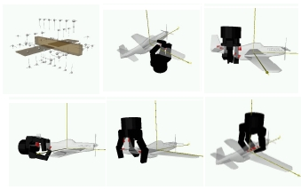
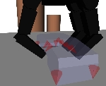

Overview
GraspIt! was created to serve as a tool for grasping research. It is a simulator that can accommodate arbitrary hand and robot designs originally developed by the Columbia University Robotics Group. It can also load objects and obstacles of arbitrary geometry to populate a complete simulation world. The GraspIt! engine includes a rapid collision detection and contact determination system that allows a user to interactively manipulate a robot or an object and create contacts between them. Once a grasp is created, one of the key features of the simulator is the set of grasp quality metrics. Each grasp is evaluated with numeric quality measures, and visualization methods allow the user to see the weak point of the grasp and create arbitrary 3D projections of the 6D grasp wrench space.
GraspIt! features
include:
- 3D user interface allowing the user to see and interact
with a virtual world containing robots, objects and obstacles;
- a library of robotic hand models;
- computation of numerical grasp quality metrics and
visualization methods for the Grasp Wrench Space;
- grasp planning;
- dynamics engine;
- support for Soft Finger Contacts;
- support for low-dimensional hand posture subspaces (also
known as eigengrasps or hand synergies);
- interaction with hardware and sensors, such as a Barrett
hand, Flock of Birds tracker and Cyberglove (Windows only);
Download
License: GraspIt! is available under the
GNU General Public License.
Platform: GraspIt! is cross-platform, and has been tested on MS Windows and Ubuntu Linux.
Download: Github (
https://github.com/graspit-simulator). The older releases can still be found at (
https://github.com/graspit-simulator/graspit/releases).
Features
Grasp-Planning: Automatic grasp planning is a difficult problem because of the huge number of possible hand configurations. Humans simplify the problem by choosing an appropriate prehensile posture appropriate for the object and task to be performed. By modeling an object as a set of shape primitives (spheres, cylinders, cones and boxes) we can use a set of rules to generate a set of grasp starting positions and pregrasp shapes that can then be tested on the object model. Each grasp is tested and evaluated, and the best grasps are presented to the user.

The primitive model used for the toy airplane with the generated set of grasps to be tested, and five of the best grasps found sorted in quality order.
Dynamics: During each time step the system solves for the motion of each body. The constraints are formulated as a linear complementarity problem which can be solved with Lemke's algorithm. Smooth joint trajectories can be created and PD joint controllers apply the necessary torques to carry out a grasp.



Snapshots during the dynamic simulation of a grasp formation, with the Barrett hand picking up a telephone.
Publications
Andrew Miller and Peter K. Allen. "Graspit!: A
Versatile Simulator for Robotic Grasping". IEEE Robotics and Automation
Magazine, V. 11, No.4, Dec. 2004, pp. 110-122. We recommend starting with that paper for the best introduction to the
system. Most of the papers below address individual features of the
simulator, you can read those that are relevant to the particular
project you are working on. The list of publication is presented in
chronological order, from oldest to newest. For each publication, we
also provide a short description of the parts of GraspIt! that it is
most relevant for. [pdf].
Andrew T. Miller and Peter K. Allen. "Examples of
3D Grasp Quality Computations". In Proceedings IEEE International
Conference on Robotics and Automation, Detroit, MI, pp. 1240-1246, May
1999. Introductory theory on the grasp quality
metrics used by GraspIt!. Discussed topics such as the Grasp Wrench
Space, L1 and LInf norms, epsilon and volume quality metrics, etc. [pdf]
Danica Kragic, Andrew T. Miller, Peter K. Allen.
"Real-time tracking meets online grasp planning". In Proceedings IEEE
International Conference on Robotics and Automation, Seoul, Republic of
Korea, pp. 2460-2465, May 2001. Application of GraspIt! to execute a
grasping task with a real robot. A real-life object is tracked using a
camera, its position is replicated in GraspIt! where a grasp is planned
using a virtual Barrett hand. The grasp is then executed using a real
Barrett hand. [pdf]
Andrew T. Miller, Steffen Knoop, Peter K. Allen,
Henrik I. Christensen. "Automatic Grasp Planning Using Shape
Primitives," In Proceedings of the IEEE International Conference on
Robotics and Automation, pp. 1824-1829, September 2003. Detailed discussion of the
Primitive-based grasp planner. [pdf]
Andrew T. Miller, Henrik I. Christensen.
"Implementation of Multi-rigid-body Dynamics within a Robotic Grasping
Simulator" In Proceedings of the IEEE International Conference on
Robotics and Automation, pp. 2262 - 2268, September 2003. Presents the theoretical framework
between the dynamics engine in GraspIt!. Covers topics such as time
step integration, formulation of contact and joint constraints as
Linear Complementarity constraints, etc. Shows how the full Linear
Complementarity problem is assembled and solved at each time step of
the dynamic engine. A must-read for understanding GraspIt! dynamics. [pdf]
Rafael Pelossof, Andrew Miller, Peter Allen and
Tony Jebara. "An SVM Learning Approach to Robotic Grasping". In IEEE
Int. Conf. on Robotics and Automation, New Orleans, April 29, 2004, pp.
3512-3518. Proposed the use of GraspIt! to generate
large amounts labeled grasping data that can be used to apply machine
learning algorithms. This code is not included in the current GraspIt!
distribution. [pdf]
Matei Ciocarlie, Claire Lackner and Peter Allen.
"Soft finger model with adaptive contact geometry for grasping and
manipulation tasks". In IEEE Symposium on Haptic Interfaces for Virtual
Environment and Teleoperator Systems, Tsukuba, JP, March 19-21, 2007. Discusses the Soft Finger contact as
implemented in GraspIt!, covering the analytical surface approximation,
soft finger grasp wrench space and formulation as linear
complementarity constraints. [pdf]
Corey Goldfeder, Peter K. Allen, Claire Lackner,
Raphael Pelossof. "Grasp Planning via Decomposition Trees". In IEEE
Int. Conference on Robotics and Automation, April 13, 2007, Rome. Proposes an automatic method of
decomposing an object into primitives (superquadrics) to fully automate
the task of primitive-based grasp planning. This code is not included
in the current GraspIt! distribution. [pdf]
Matei Ciocarlie, Corey Goldfeder and Peter Allen.
"Dimensionality reduction for hand-independent dexterous robotic
grasping". In IEEE / RSJ Conference on Intelligent Robots and Systems
(IROS) 2007, San Diego, Oct. 29 - Nov. 2. Introduces the eigengrasp concept and
grasp planning in eigengrasp space as an optimization problem solved
through Simulated Annealing. This is the recommended starting point if
you are interested in eigengrasps. [pdf]
Matei T. Ciocarlie and Peter K. Allen. "On-Line
Interactive Dexterous Grasping". In Eurohaptics 2008, Madrid, June
10-13, 2008. Presents an application of eigengrasp
planning for on-line interaction with a human user. This is the theory
behind the OnLinePlanner class included in the distribution. [pdf]
Corey Goldfeder, Matei Ciocarlie, Hao Dang and
Peter K. Allen. "The Columbia Grasp Database". In IEEE Int. Conf. on
Robotics and Automation 2009, Kobe. Shows how GraspIt! can be used to
generate a huge database of labeled grasp data, and how this database
can be used for data-driven grasp planning algorithms. The database is
publicly available. We are currently working on releasing all the
interface code that you need for using both GraspIt! and the Columbia
Grasp Database together. We hope that this feature will be available in
the summer of 2009 at latest. [pdf]
|